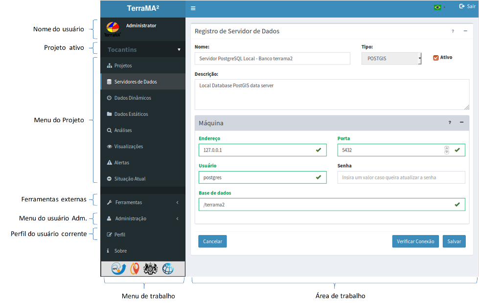

Módulo de Administração
O Módulo de Administração da plataforma TerraMA2 utiliza uma interface web que pode ser acessada a partir de qualquer navegador. O acesso ao módulo é somente por um usuário cadastrado que terá acesso a interface apresentada na Figura 2.1, com destaque aos principais componentes. Neste módulo o usuário administra as contas de usuário, serviços e os projetos, incluindo as definições dos servidores de dados, dados dinâmicos, dados estáticos, análises, visualizações e alertas, entre outras opções.

Figura 2.1 – Módulo de Administração.
Os principais itens da interface deste módulo são:
- Nome do usuário : nome do usuário atualmente conectado a plataforma.
- Projeto ativo : nome do projeto ativo no momento. Clique para trocar de projeto. Todos os projetos de qualquer usuário estará disponível.
- Menu – Projetos : acesso a lista de projetos para edição e adição de novos.
- Menu – Servidores de Dados : acesso a servidores de dados locais ou remotos do projeto ativo.
- Menu – Dados Dinâmicos : dados ambientais dinâmicos locais ou remotos disponíveis em servidores do projeto ativo.
- Menu – Dados Estáticos : mapas geográficos (vetoriais ou matriciais) disponíveis em servidores do projeto ativo.
- Menu – Análises : análises com dados estáticos e dinâmicos a serem executadas no projeto ativo.
- Menu – Visualizações : definição de visual e estilo dos dados estáticos, dinâmicos e análises do projeto ativo.
- Menu – Alertas: configuração dos alertas a serem enviados aos usuários do projeto ativo.
- Menu – Situação Atual: apresenta as últimas tarefas executadas por cada serviço de todos os projetos em atividade.
- Ferramentas externas: link para ferramentas externas e sites de interesse geral. Lista pode ser editada na configuração da plataforma.
- Menu – Administração : somente para usuário com permissão de administrador.
- Serviços : define, configura e administra os serviços que serão utilizados pelos usuários em seus projetos
- Usuários : lista de usuários, administradores ou não.
- Perfil do usuário corrente : lista dos atributos do usuário ativo.
- Menu de Trabalho : acesso a todos itens acima. Pode ser oculto para aumentar a área de trabalho através do botão ≡ na barra superior da interface.
- Área de Trabalho : área destinada a apresentar as propriedades de cada item do menu.
Created with the Personal Edition of HelpNDoc: Full-featured Help generator